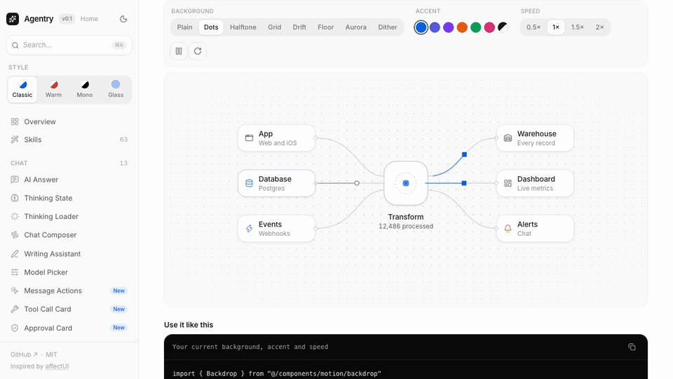
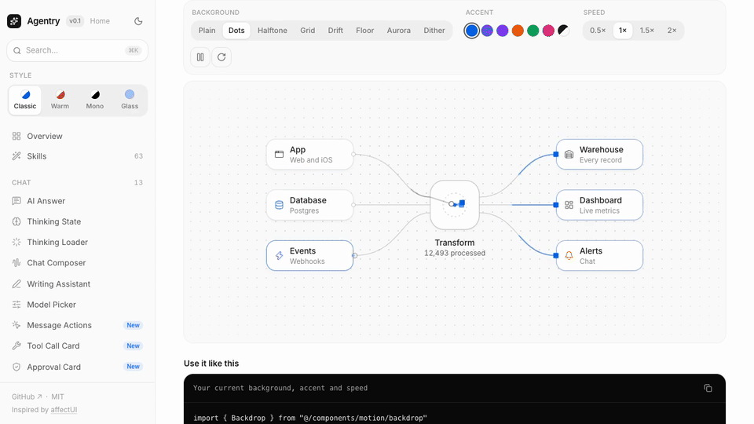

Output


Result
Delivered clip.gif: 960x540, 15 fps, 120 frames, full 8 s, loops forever, 1,299,074 bytes (1.24 MB, under the 2 MB limit). Made with a two-pass ffmpeg palette (palettegen with stats_mode=diff, then paletteuse with sierra2_4a dithering and rectangle diffing), Lanczos downscale from 1280x720.
I tried five size/fps/palette combinations first (sizes 0.58 to 1.6 MB, listed below) and picked the largest one that still fit comfortably: 960 px wide keeps the small sidebar and UI labels readable in a Slack message, and 15 fps keeps the moving flow-diagram dots smooth. I checked a decoded GIF frame visually; text is legible. Not done: I did not trim to a seamless loop point, the 8 s clip is looped as is, so the animation may jump when it restarts. I did not upload to Slack to test.
Terminal
# Source is an 8 s screen recording of a UI, mostly static with small moving parts.
ffprobe -v error -show_entries stream=width,height,r_frame_rate,duration,codec_name -of default=nw=1 clip.mp4
codec_name=h264
width=1280
height=720
r_frame_rate=30/1
duration=8.000000
# A shell quoting bug, not an ffmpeg one.
ffmpeg -v error -y -i clip.mp4 -vf "fps=F,scale=W:-1:flags=lanczos,split[a][b];[a]palettegen=max_colors=C:stats_mode=diff[p];[b][p]paletteuse=dither=D:diff_mode=rectangle" -loop 0 out.gif # a try() helper over W/F/C/D
(first run failed: zsh expanded $c: as a modifier -> "Invalid chars 'teuse=dither=bayer'"; fixed by using ${c} braces)
# Sizes are small because the content is mostly static.
try 1280 10 128 bayer; try 800 12 128 bayer; try 720 12 128 sierra2_4a; try 640 15 128 bayer; try 800 10 96 bayer
1265939 t_1280_10_128_bayer.gif
747580 t_800_12_128_bayer.gif
601052 t_720_12_128_sierra2_4a.gif
583851 t_640_15_128_bayer.gif
608834 t_800_10_96_bayer.gif
# Spend the budget on resolution and colours; picked 960 / 15 fps / 256 colours.
try 960 15 256 sierra2_4a; try 1024 15 192 bayer; try 960 20 256 bayer
1299074 t_960_15_256_sierra2_4a.gif
1443257 t_1024_15_192_bayer.gif
1621415 t_960_20_256_bayer.gif
ffprobe -v error -count_frames -show_entries stream=width,height,nb_read_frames,r_frame_rate,duration:format=size -of default=nw=1 clip.gif
width=960
height=540
nb_read_frames=120
r_frame_rate=15/1
duration=8.000000
size=1299074
ffmpeg -v error -y -i clip.gif -vf "select='eq(n,40)'" -frames:v 1 g40.png
(decoded frame viewed: sidebar labels, buttons and node text are readable)
Files
make-gif.sh
ffmpeg -v error -y -i clip.mp4 \ -vf class="s">"fps=15,scale=960:-1:flags=lanczos,split[a][b];[a]palettegen=max_colors=256:stats_mode=diff[p];[b][p]paletteuse=dither=sierra2_4a:diff_mode=rectangle" \ -loop 0 clip.gif